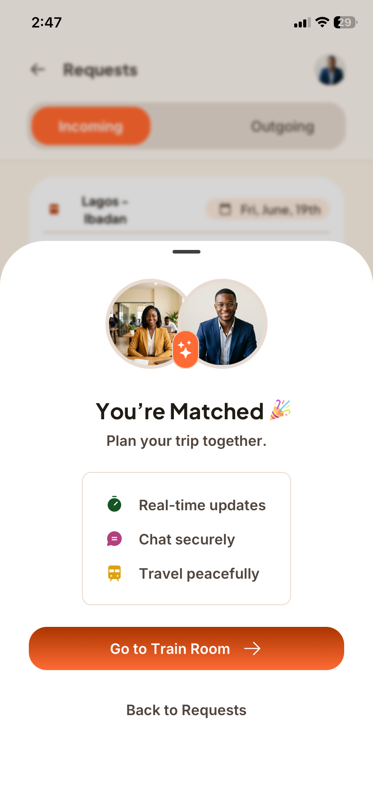

Choose Your Seatmate
Discover people travelling on the same train before booking your seat.
Preparing your journey...
Built for safer and more meaningful train journeys
DOT helps train passengers discover compatible people before their journey, making every trip feel safer, more comfortable, and far less random.



Discover people travelling on the same train before booking your seat.
Start conversations before your journey and make every trip more enjoyable.
Better journeys begin with knowing who you'll be travelling beside.
Share your trip, browse compatible travellers, and coordinate your seats before departure.
Tell DOT when you're travelling. Other passengers heading on the same route can discover your journey before ticket sales open.
Explore profiles, interests and travel vibes to find someone you'd actually enjoy sitting beside.
When ticket sales open, coordinate your booking so you're seated together.
Meet naturally at the station and enjoy a safer, friendlier and more comfortable journey.
DOT isn't about dating. It isn't random social networking. It's about making train journeys more comfortable by helping passengers connect before departure.
DOT gives you time to discover compatible passengers before your train journey, so every travel decision feels more intentional.
Share your upcoming trip long before ticket sales open. Review requests, compare profiles and decide who you'd like to sit with.
Whether you enjoy quiet journeys, networking, music or meaningful conversations, DOT helps you find compatible passengers.
Start conversations before the trip so meeting at the station feels familiar instead of awkward.
Once NRC ticket sales begin, simply book seats close to each other and enjoy the journey together.
Share your trip
Browse compatible passengers
Book nearby seats
Meet and enjoy your journey
Whether you're travelling for business, school, family or leisure, DOT helps make every trip more comfortable.
Plan your journey well before ticket sales begin.
Choose people that match your interests and travel style.
Travel with more confidence by connecting before departure.
Still have questions? We're happy to help.
No. DOT is a travel coordination platform that helps train passengers discover compatible people before their journey.
No. In fact, DOT works best before booking. You can share your upcoming trip, review requests and decide who you'd like to travel with before NRC ticket sales begin.
Yes. DOT allows passengers to coordinate before booking so they can reserve nearby seats once ticket sales open.
Yes. Downloading and using DOT is completely free.
DOT currently focuses on NRC passenger train journeys, beginning with popular routes such as Lagos–Ibadan, with support for additional routes planned.
Every new traveller makes DOT more valuable. Start connecting before your next trip and help create a friendlier travel experience.
Get updates, travel tips and product announcements.